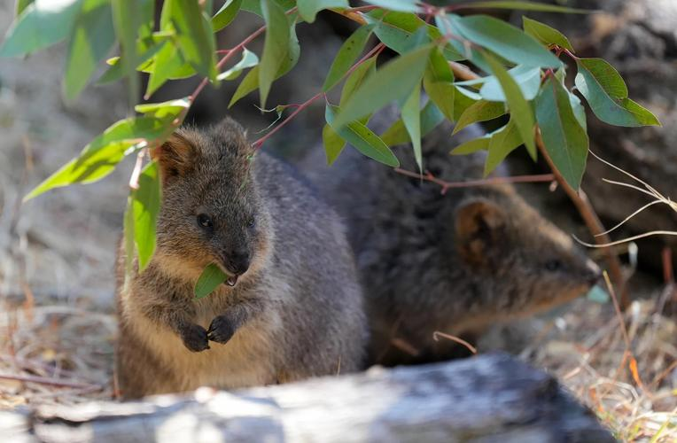
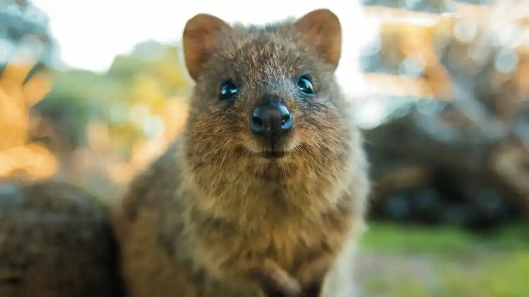

为什么我们会微笑?10个关于“微笑袋鼠”的萌萌秘密

2020年5月21日 - Quokka是素食动物，它们吃草和许多植物的叶子、茎和树皮，因为罗特尼斯岛是淡水稀缺的地方，所以Quokka非常耐渴，可以连续一个月不喝水，或者吃些多肉植物来补充水分。Quokkas有能力在尾巴中储存脂肪，以...
澳洲萌宠大揭秘!🐾

2024年11月30日 - 短尾矮袋鼠 quokkas 被称为“世界上最快乐的动物”,短尾矮袋鼠以其友好的天性和可爱的笑容闻名。它们只能在珀斯附近的自然保护区遇见,世界各地的游客都期待与它们合影留念。🥰 📍
小兔gaara吧 - 百度贴吧

这里是2012年，欢迎回家
关注用户：174万人
累计发帖：9259万
-
【贴子恢复申请处】在这里申请恢复自己的帖子！ 精回复：2万 点击：31万
-
回复：120 点击：5902
-
祝你所向披靡 精回复：5048 点击：13万
tieba.baidu.com/ ▼
世界上最快乐的动物 - 百度知道
2024年4月6日 - 在澳大利亚广袤的草原上，有一群身形娇小、活泼可爱的生物，它们就是短尾矮袋鼠。这些袋鼠家族中的小精灵，以他们独特的外貌和迷人的行为方式征服着人们的心。跃动草原间，宛如森林中的精灵舞者，短尾矮袋鼠...
百度知道超过100人赞同了该回答
百度热搜
换一换
- 1 新春万里暖山河 新
- 2 马年央视春晚首发单曲 热
- 3 机场里还能“赶大集”
- 4 高速返乡一幕：红色“长龙”看不见头
- 5 两只年货鸭子在后备箱打起来了